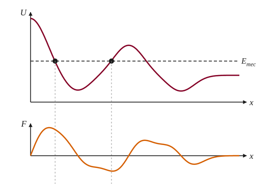

← 목차
퍼텐셜 에너지 곡선 (potential energy curve)
1차원에서 입자에 작용하는 힘은 퍼텐셜 에너지 곡선
의 기울기에 음의 부호를 붙인 값이다.
(8.3.2)
운동에너지는
(8.3.4)다.
는 음수가 될 수 없어서
인 곳으로는 가지 못한다.
인 곳이
되돌이점 (turning point)
이다. 기울기가 0인 곳은 평형점이고 곡선의 바닥은 안정 평형, 꼭대기는 불안정 평형이다.
